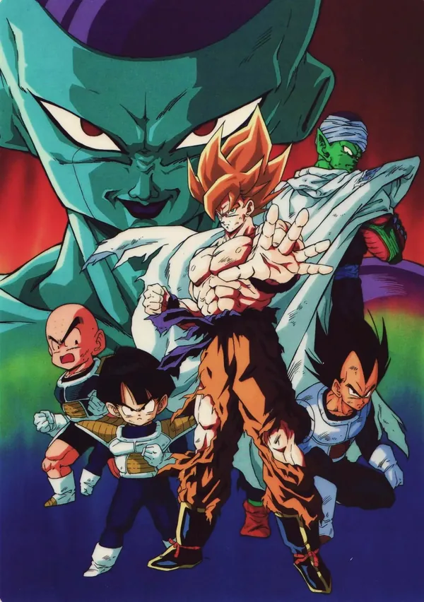

Dragon Ball Z
El pilar indiscutible del shonen y la serie que definió las tardes de toda una generación. Desde la invasión de los Saiyans en la Tierra hasta el clímax contra Majin Buu, Toriyama perfeccionó la tensión de los combates cuerpo a cuerpo, las transformaciones legendarias que paralizaban patios de colegio y un sentido del sacrificio y superación que convirtió a Goku en un icono cultural imperecedero.